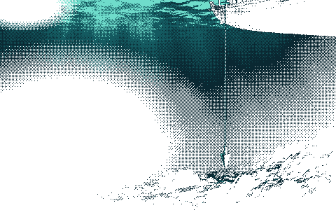

Local-first dev tool
Every database query, trace and log line from the apps running on your machine, in one fast desktop app. Nothing leaves your computer.
Works with anything that speaks OpenTelemetry.